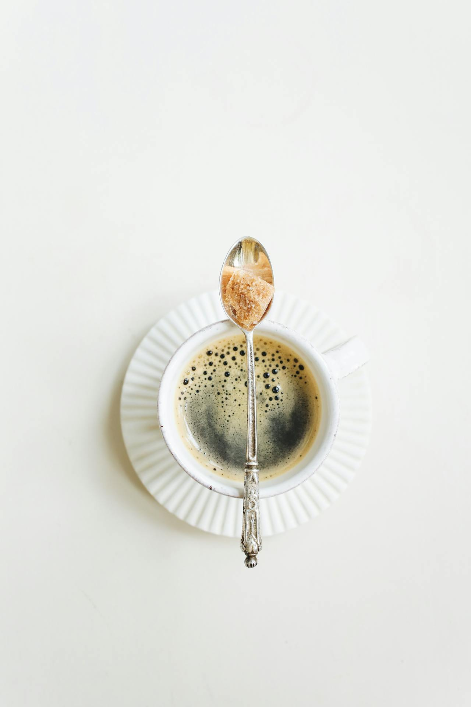

Cafeteria Uninter
Seja muito bem vindo á cafeteria da uninter.
Aqui você vai experimentar os melhores cafés da região.
- Café carioca
- café espresso
- capuccino
- mocha
- latte
Preparação do café carioca
- Separe os ingredientes
- Colocar a agua para ferver
- Acrescente pó de cáfe
- Coe o café
- Deguste o café.
- Cappucino
- Bebida vaporizada, de leite com cáfe
- mocha
- Café com leite, servido na taça, com cobertura

- Latte
- Café com leite vaporizado na taça e um toque de canela.